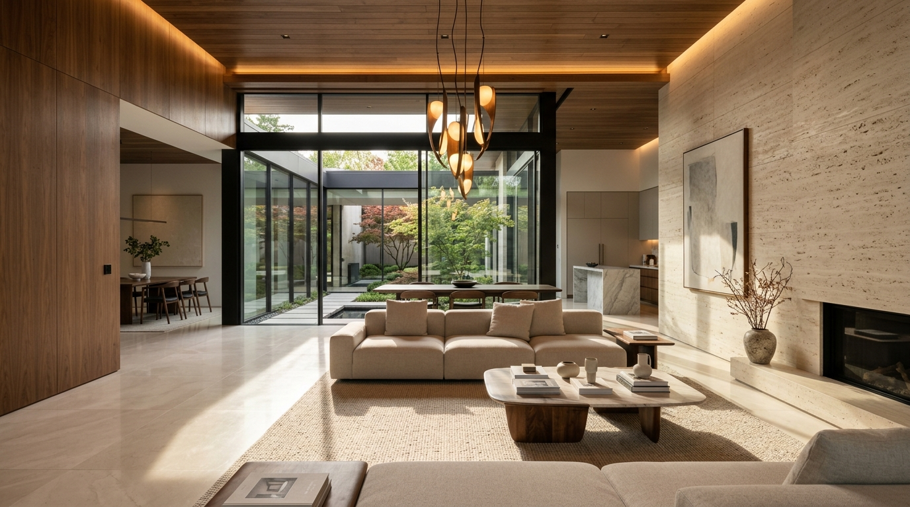
Interiors
Architecture
Experience
Spaces Designed
to Be Experienced.
Timeless interiors shaped by light, material and architectural precision.
Our Philosophy
"Luxury is not
"Luxury is not
about excess."
"It is about proportion. Material. Light. Silence. And the way a space makes you feel."
True quiet luxury does not demand attention; it commands presence through restraint. We eliminate the superficial to reveal the profound dialogue between warm American walnut, honed geological limestone, and the quiet choreography of natural light.
Every line is considered. Every shadow is deliberate. We design sanctuaries that age with dignity, providing an acoustic and sensory refuge from an accelerated world.

Plate 01 — Atrium Geometry
Natural Stone & Walnut
Spatial Sequence
The Spaces
A cinematic progression through four distinct spatial atmospheres, each sculpted with organic warmth and architectural integrity.
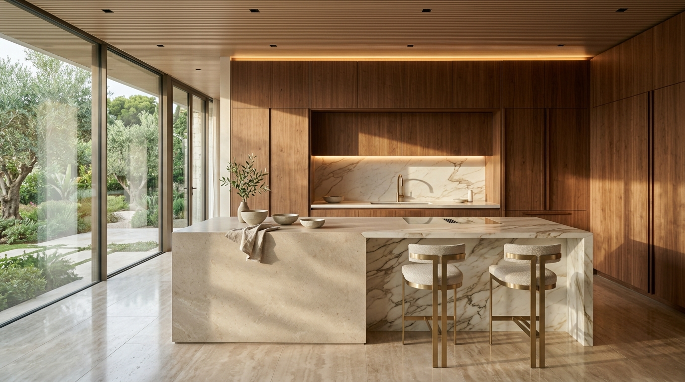
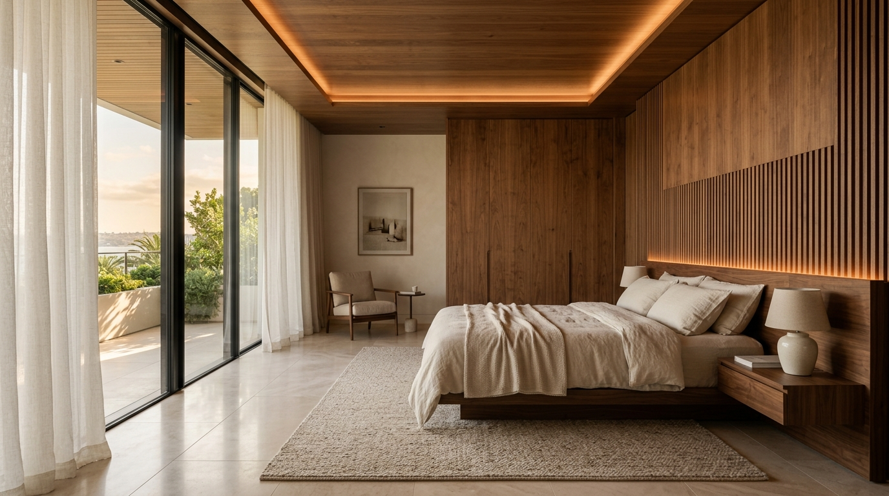
Space 01
LIVING
"Light, proportion and effortless comfort."
Framed by continuous floor-to-ceiling glazing, the living pavilion dissolves the boundary between interior sanctuary and nature. Warm walnut partitions balance the monumental scale of honed travertine stone surfaces.
01
Natural Stone
Honed Navona Travertine Hearth
02
Walnut
Bookmatched Acoustic Wall Paneling
03
Soft Textiles
Belgian Linen & Bouclé Upholstery
Plate 02 — Culinary Pavilion
Calacatta & American Walnut
Space 02 — Culinary Sanctuary
"Crafted Around
"Crafted Around
the Ritual of Living."
Designed not merely as a functional workspace, but as an architectural centerpiece. Seamless walnut millwork conceals modern culinary technology, allowing pure geometric mass and tactile stone to define the atmosphere.
Material
American Walnut Joinery + Monolithic Honed Calacatta Marble
Light
Direct Daylight + Concealed 2700K Warm Architectural Cove Lighting
Style
Contemporary Warm Minimalism & Seamless Concealment
Hardware
Brushed Champagne Brass Fixtures with Hand-Applied Satin Patina
Space 03 — Rest & Tranquility
"A quieter kind
"A quieter kind
of luxury."
The master suite is an exercise in acoustic stillness and tonal harmony. Warm walnut vertical battens diffuse sound while concealing ambient LED illumination, creating an envelopment of gentle warmth at dusk.
Atmosphere
Acoustic Calm
Sound-Dampening Timber Slat Architecture
Surfaces
Tactile Linen
Unbleached Oatmeal Bedding & Wool Underlay
Horizon
Framed Garden
Floor-to-Ceiling Glass with Sheer Linen Drape
Material Honesty
Materials & Details
We believe timeless architecture is born from materials that age with grace. Each element is selected for tactile depth, geological integrity and enduring patina.
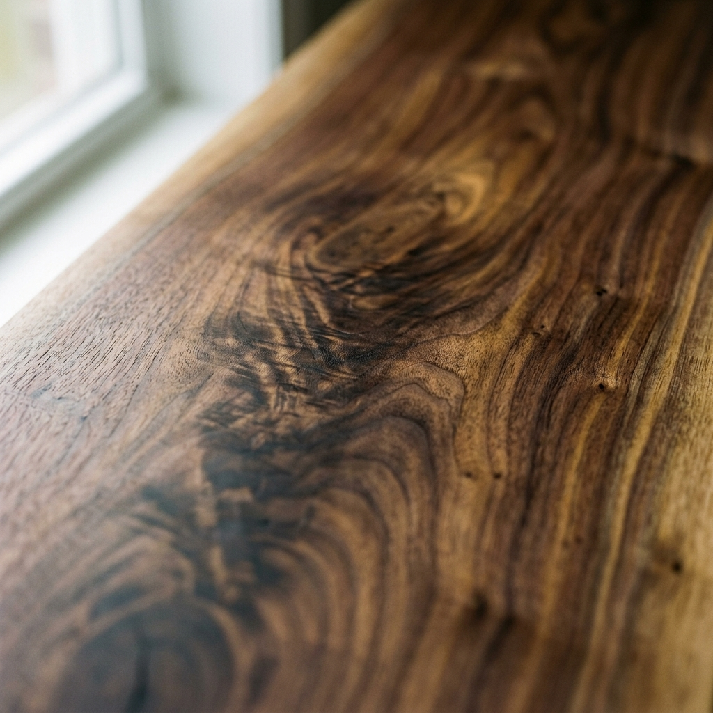
Walnut
Warm American timber with hand-rubbed organic satin oil finish.
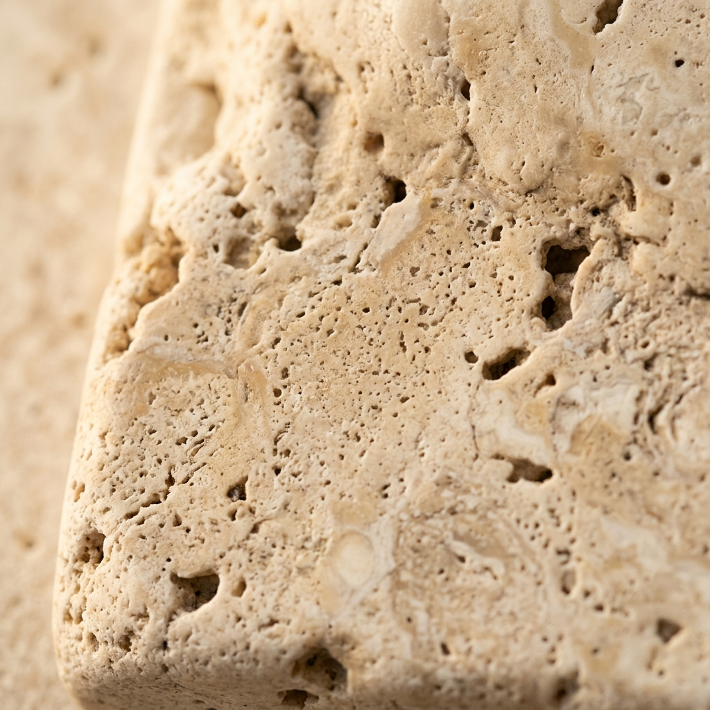
Natural Stone
Honed Italian travertine with porous geological character.
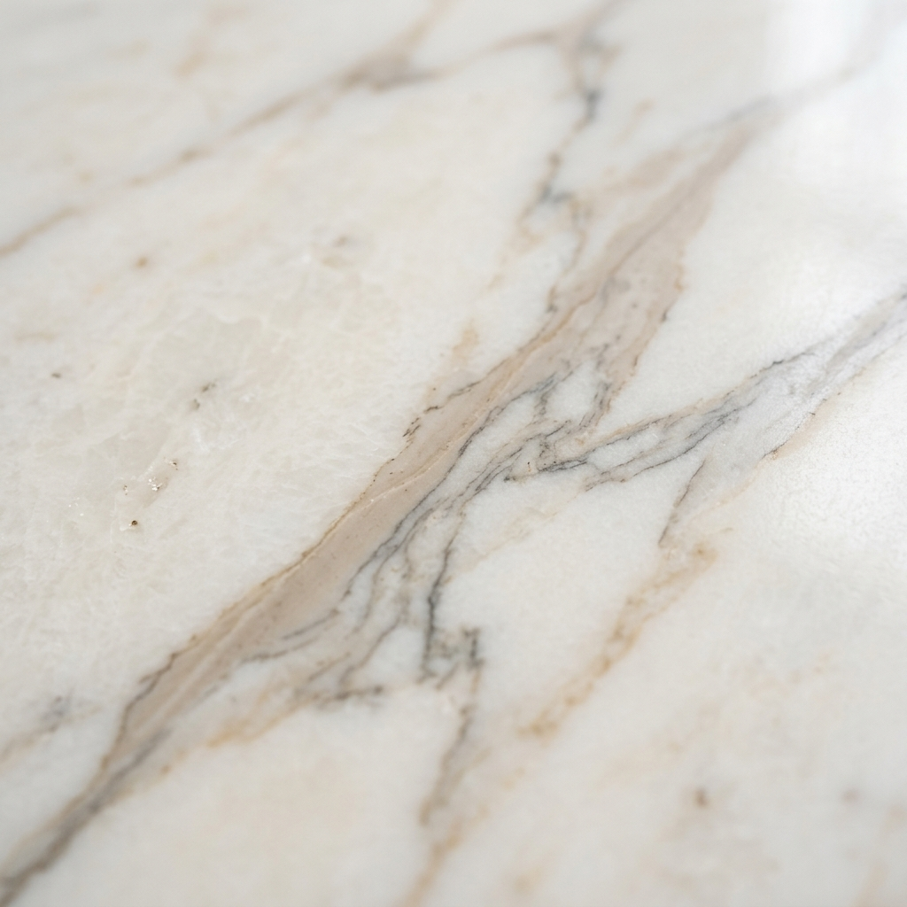
Marble
Calacatta with warm golden-taupe veining and honed touch.
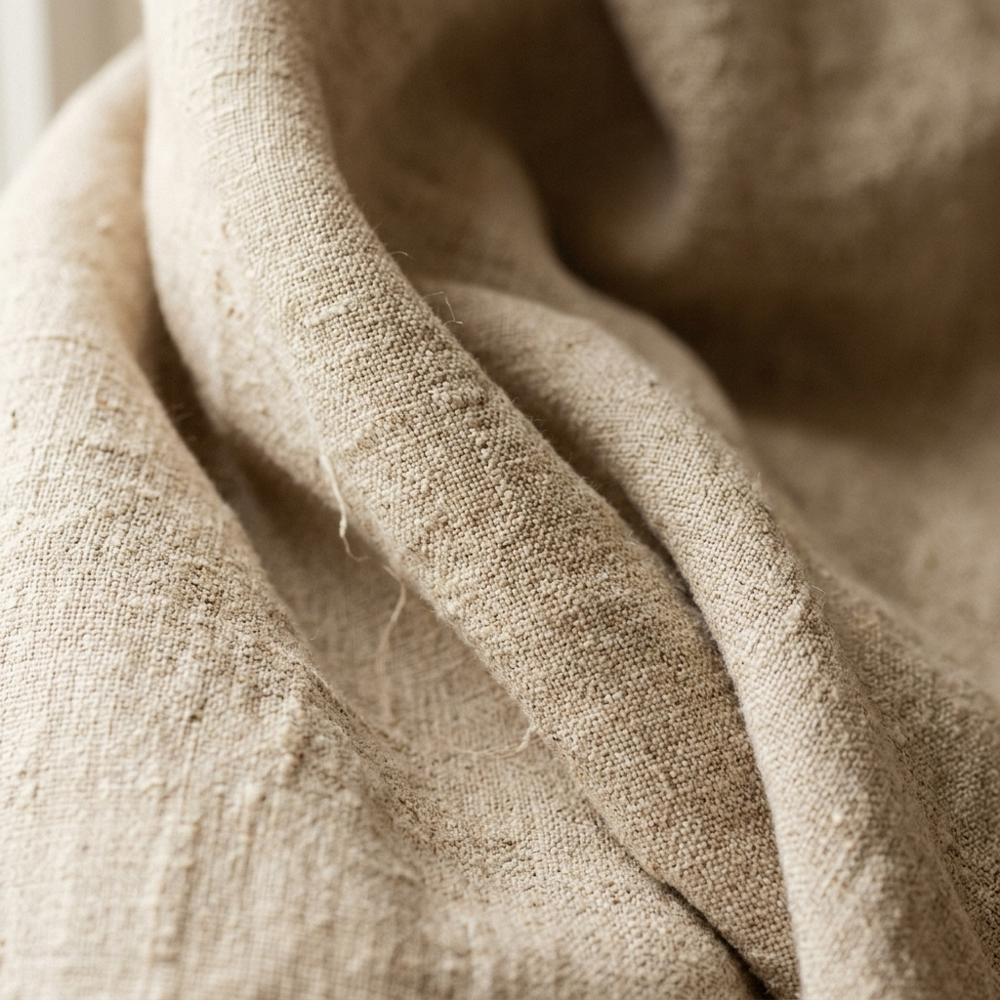
Linen
Heavyweight unbleached Belgian weave offering acoustic softness.
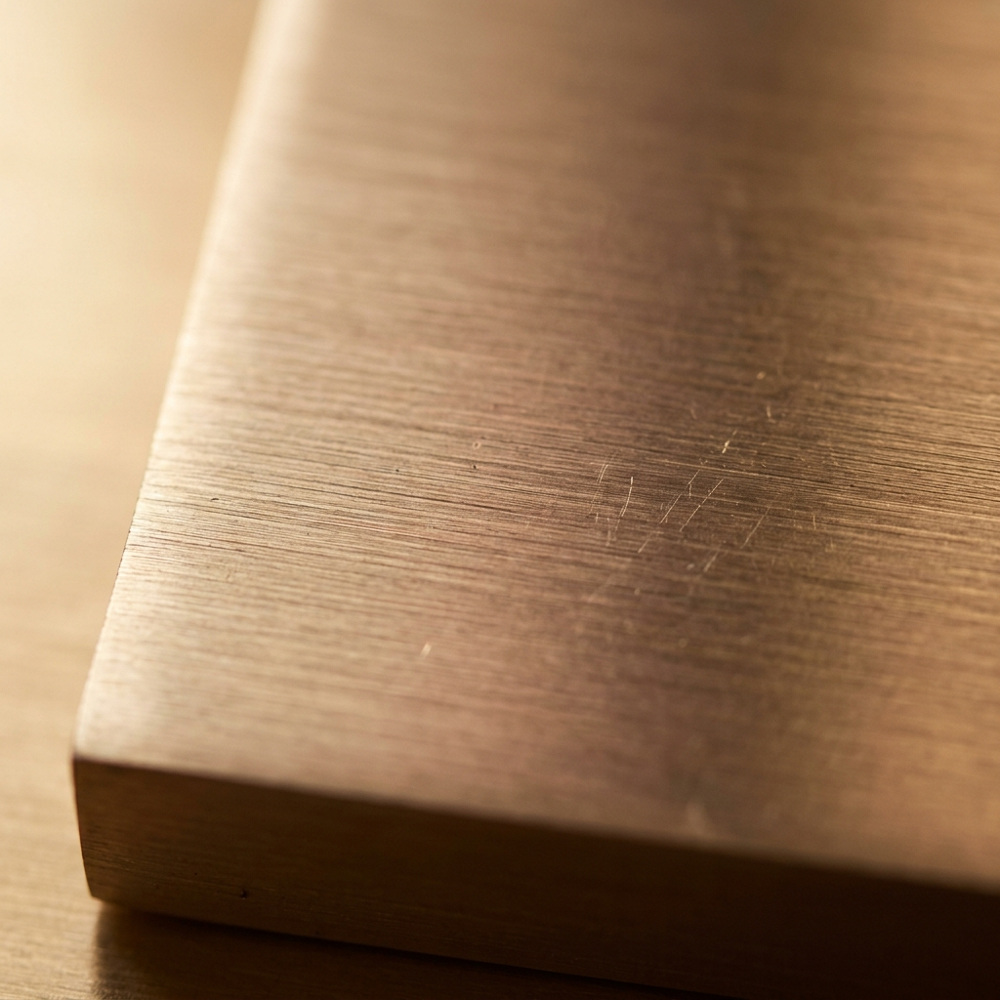
Brass
Hand-brushed champagne brass that develops rich living patina.
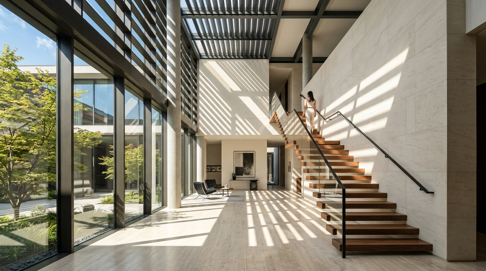
Glass
Ultra-clear low-iron acoustic glazing erasing visual boundaries.
Methodology
"From First Sketch
"From First Sketch
to Final Detail."
Our studio operates with rigorous architectural discipline. Every commission begins with intimate spatial listening and concludes with bespoke artisan execution.
01
DISCOVER
Understanding lifestyle, diurnal rituals, spatial needs and the microclimate of the site. We study how natural light will enter throughout the seasons.
02
DEFINE
Developing the architectural design language, tactile material palettes, spatial flow, and acoustic parameters tailored exclusively for the residence.
03
DESIGN
Translating concepts into millimetric architectural specifications, bespoke joinery details, concealed lighting fixtures, and integrated spatial experiences.
04
DELIVER
Overseeing artisan fabrication and construction on-site. Bringing every stone slab, walnut panel, concealed hinge, and ambient glow into harmonious reality.
Selected Works
Project Portfolio
A curated anthology of private residences, lakefront pavilions and urban penthouses completed across Europe and North America.
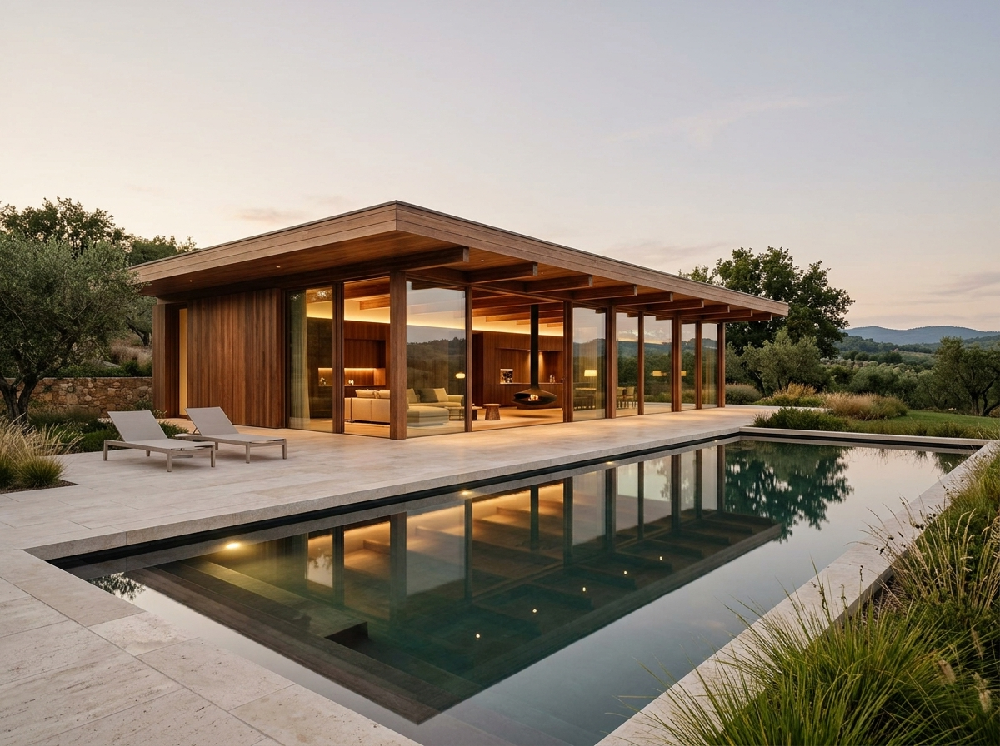
Villa No. 01
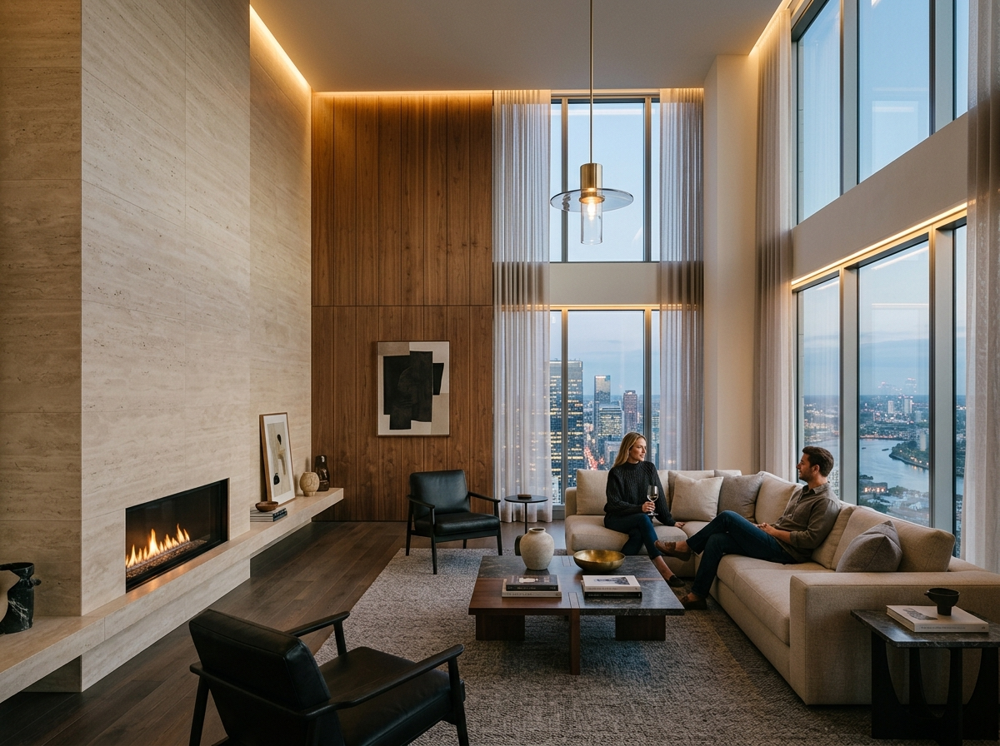
Residence 27
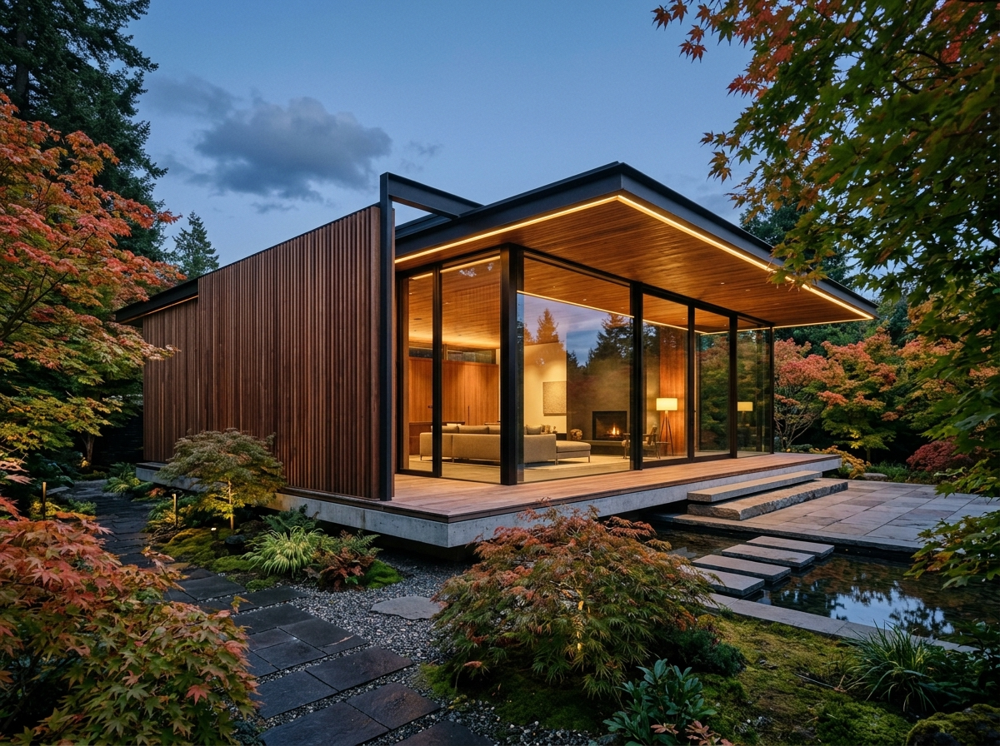
The Walnut House
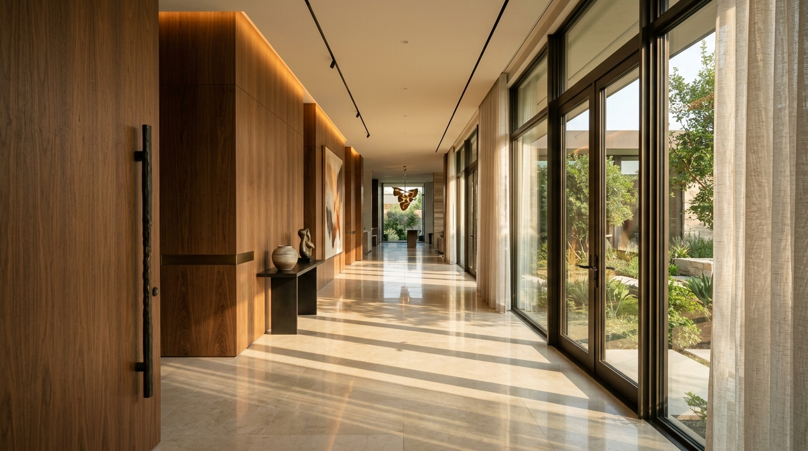
Coastal Residence
Vision
"We create spaces
"We create spaces
that remain with you."
Architecture is not merely what we see; it is what we feel when the world outside falls silent. A harmonious balance between physical matter and the soul of space.
Start a Conversation
"Let's create
"Let's create
something timeless."
Zürich Atelier
Gotthardstrasse 26, Enge
8002 Zürich, Switzerland
+41 44 280 19 00
Milano Studio
Via Solferino 18, Brera
20121 Milano, Italy
+39 02 8739 4120
New Commissions
Press & Monograph